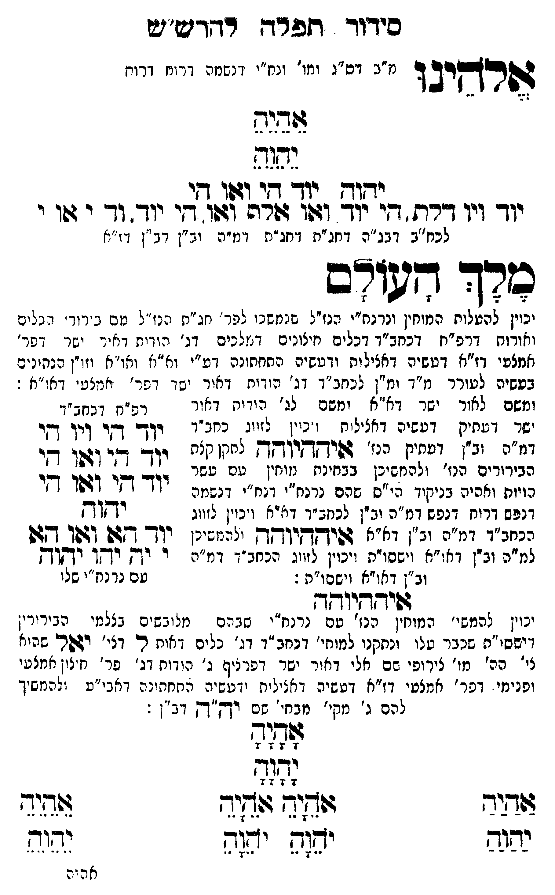

Neue Klartextfassung
אלהינו [מ"ב דס"ג ומי' ונח"י דנשמה דרוח דרוח] אֵהֵיֵהֵ יֵהֵוֵהֵ יהוה יוד הי ואו הי יוד ויו דלת הי יוד ואו אלף ואו הי יוד וד י או י [לכח"ב דבג"ה דחג"ת דחג"ת דמ"ה וב"ן דב"ן דז"א] מלך העולם [יכוין להעלות המוחין ונרנח"י הנז"ל שנמשכו לפר' חג"ת הנז"ל עם בירורי הכלים והאורות דרפ"ח דכחב"ד דכלים חיצונים דמלכים דג' הודות דאור ישר דפר' אמצעי דז"א דעשיה דכללות ורביעיה התחתונה דע"י וא"א ואו"א וזו"ן הנתונים בעשיה לעורר מ"ד ומ"ן לכחב"ד דג' הודות דאור ישר דפר' אמצעי דאו"א:] [ומשם לאור ישר דא"א ומשם לג' הודות דאור ישר דעתיק דעשיה דכללות ויכוין לזווג כחב"ד דמ"ה וב"ן דעתיק הנז' איההיוהה לתקן כלם הבירורים הנז' ולהמשיכן בבחינת מוחין עם עשר הויות וחלפי' בניקוד כ"ס שהם נרנח"י ורנח"י דנשמה דנפש דרוח דנפש דמ"ה וב"ן לכחב"ד דא"א ויכוין לזווג בכחב"ד דמ"ה וב"ן דא"א איההיוהה ולהמשיכן למ"ה וב"ן דאו"א וישסו"ת ויכוין לזווג הכחב"ד דמ"ה וב"ן דאו"א וישסו"ת:] === טבלה === [טור ימין] [טור אמצעי] [טור שמאל] יוד הי ויו הי יוד הי ואו הי יוד הי ואו הי יהוה יוד הא ואו הא י יה יהו יהוה [עם כתר"ו שלו] === סוף טבלה === איההיוהה [יכוין להמשי' המוחין הנז' עם נרנח"י שבהם מלובשים בצלמי הבירורין דישסו"ת שכבר עלו ונתקנו למוחי' דכחב"ד דג' כלים דאות ל דג' יאל שהוא לי' הכ' מו' צירופי שם אלי דאור ישר דפרצוף ג' הודות דג' פר' חיצון אמצעי ופנימי דפר' אמצעי דז"א דעשיה דכללות ורביעיה התחתונה דאבי"ע ולהמשיך להם ג' מקי' מבחי' שם יה"ה דב"ן: [?]] === טבלה === [טור ימין] אַהַיַהַ יַהַוַהַ [טור אמצעי] אָהָיָהָ יָהָוָהָ אֹהֵיָהֵ אֹהֵיָהֵ יֹהֵוָהֵ יֹהֵוָהֵ [טור שמאל] אֵהֵיֵהֵ יֵהֵוֵהֵ === סוף טבלה ===
Original gegen neue OCR · Niqqud für Vergleich ausgeblendet
Original
אלהינו [מ"ב דס"ג ומי' ונח"יK085-001 דנשמה דרוח דרוח] אהיה יהוה יהוה יוד הי ואו הי יוד ויו דלת הי יוד ואו אלף ואו הי יוד ודK085-002 י אוK085-003 י [לכח"ב דבג"הK085-004 דחג"ת דחג"ת דמ"ה וב"ןK085-005 דב"ן דז"א] מלך העולם [יכוין להעלותK085-006 המוחין ונרנח"י הנז"ל שנמשכוK085-007 לפר' חג"ת הנז"ל עם בירורי הכלים והאורותK085-008 דרפ"ח דכחב"דK085-009 דכלים חיצונים דמלכים דג' הודות דאור ישרK085-010 דפר' אמצעי דז"א דעשיה דכללות ורביעיה התחתונהK085-011 דע"י וא"א ואו"א וזו"ן הנתוניםK085-012 בעשיה לעורר מ"דK085-013 ומ"ן לכחב"דK085-014 דג' הודות דאור ישרK085-015 דפר' אמצעי דא"א:] [ומשםK085-016 לאור ישר דא"א ומשםK085-017 לג' הודותK085-018 דאור ∅K085-019 ישר דעתיק דעשיה דכללות ויכויןK085-020 לזווג ∅K085-021 כחב"ד דמ"ה וב"ן דעתיקK085-022 הנז' איההיוהה לתקן כלם הבירורים הנז' ולהמשיכן בבחינת מוחין עם עשר הויות וחלפי' בניקוד כ"ס שהםK085-023 נרנח"י ורנח"י דנשמה דנפש דרוח דנפש דמ"ה וב"ן לכחב"ד דא"א ויכוין לזווג בכחב"ד דמ"ה וב"ן דא"א איההיוהה ולהמשיכן למ"ה וב"ן דאו"א וישסו"ת ויכוין לזווג הכחב"ד דמ"ה וב"ן דאו"א וישסו"ת:] === טבלה === [טור ימין] [טור אמצעי] [טור שמאל] יוד הי ויו הי יוד הי ואו הי יוד הי ואו הי יהוה יוד הא ואו הא י יה יהו יהוה [עם כתר"ו שלו] === סוף טבלה === איההיוהה [יכוין להמשי' המוחין הנז' עם נרנח"י שבהםK085-024 מלובשים בצלמי הבירורין דישסו"תK085-025 שכבר עלו ונתקנוK085-026 למוחי' דכחב"דK085-027 דג' כלים דאות ל דג' יאל שהוא לי' הכ'K085-028 מו' צירופי שם אלי דאור ישר דפרצוףK085-029 ג' הודותK085-030 דג' פר' חיצון אמצעי ופנימיK085-031 דפר' אמצעי דז"א דעשיה דכללות ורביעיה התחתונהK085-032 דאבי"ע ולהמשיךK085-033 להם ג' מקי' מבחי'K085-034 שם יה"ה דב"ן: ] === טבלה === [טור ימין] אהיה יהוה [טור אמצעי] אהיה יהוה אהיה אהיה יהוה יהוה [טור שמאל] אהיה יהוה === סוף טבלה ===K085-035
OCR · fehlbar
ידוך דזע רד רדדש"יש דשרקיב ד נ"ב ס"ג ומו' זנח"יK085-001 דנשמה דרוח זרוח צודגגף נהוף חפוח ין דך וגלו -זי יוך ויך דרת . זי יוך ודתו הרה ובוו. זי יודך. ו-K085-002 י גטוK085-003 י לכח"ב דג"ה דחג"חK085-004 דחג"ת ומ"ה יב"ןK085-005 דב"ן דז"א כרך דצורם יכוין להטלוחK085-006 המוחין ונרנח"י הנז"ל שננזשניK085-007 לפר' חג"ת י נז"ל מם : יוד' ג נליס ואוצותK085-008 דרפ"ח דכחב"ךK085-009 דכלים חיצונים דיזלכים -נ ' הוויח דאיר ישר.K085-010 דפר' אמצעי דז"א דטשיה דאנילות ודעשיה החחתונהK085-011 דע"י וא"א ואו"א וזז"ן כנחיניםK085-012 בעשיה לעורר מ"ךK085-013 ומ"ן לנחב"דK085-014 דג' בודוחק דאיד יש -K085-015 דפר' יצמצט י דאו"א : ומשםK085-016 לאור ישר דא"א זמשםK085-017 לג' י ודוK085-018 דאור רפ"ח -כחב"ךK085-019 ישר דעתיק דטשיה דאצילות ז נ. י'K085-020 לזווג כחג ין- דקי דין די דגז"ה וב"ן ד: הנז' גשיקדזי"קךן לחקן ג יו- - - (זפן די הבירורים הנז' ולהנזשיכן בבר"נץ [(י (שט ששנ יזך י-) (ז[ן די הויוח ואהיה בניקיך הי"ס שהם נרנח"י דנח"י דנשמה ן ל דנלש דרוח דנפש דמ"ה יב"ן לכזב"ך דיציא ויכין ל. וג ידזוץK085-021 כחב"ד דמ"ה וב"ן דא"א דשישךךךיךקךן ילעמשינן יו- -7ש וגפן ט למ"ה ובין דא"א וישסו"ח וכוין לזווג הנחב - דמ"ח י יך ידך ישוך וב"ן דאויא וישפו"ח : טם נד נח" שלו דויחדדוד[ך יבוין להמשי'ן המוח"ןK085-022 הנז' טםK085-023 נרנח"י שגרםK085-024 מלובשים בצלמי הבירירין דישסי "חK085-025 שכבר עלו ונחקניK085-026 למוחי' דנחב "דK085-027 דג' כלים דאוח ר. דצי' וגפרי שהיא צי' הה'K085-028 מו' צירופי שם אלי דאור ישר דפר ניףK085-029 ג' ה(דוחK085-030 דג' פר' ח יצו אמלעי ופנימי.K085-031 דפר' אמצעי דז"א דש שיה דאצ יל ית ידפשיה החחקינ הK085-032 דאבי"ע ( להמשיךK085-033 להם ג' מקי'' מבח..K085-034 שם -ךז"ךק דב"ן : שדיח 7 74 0' 7 גג[ 7 4 4 7 זזדיד ג(י- (תיד דיד לל י(. ינח יריד א ה יהK085-035